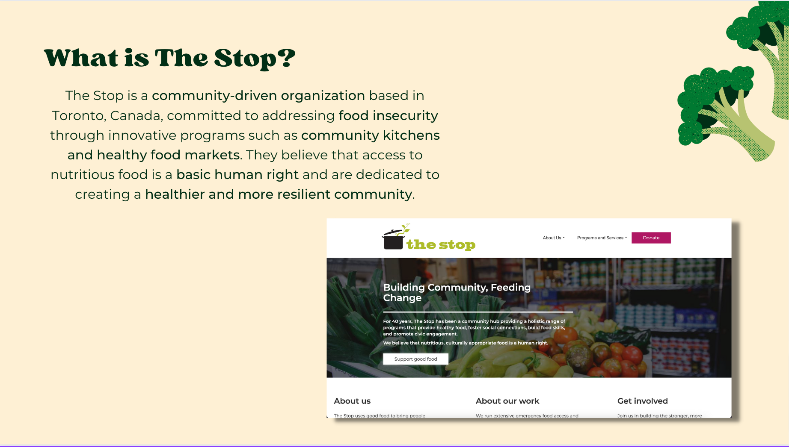
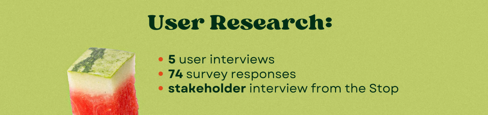
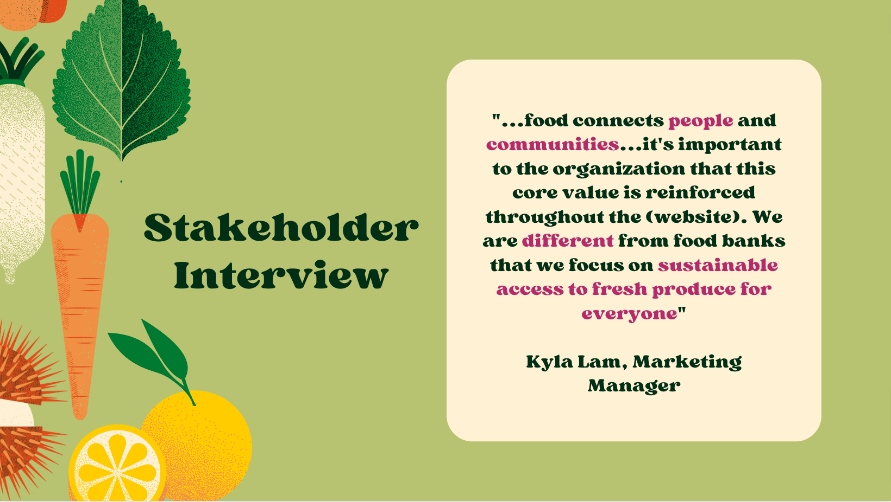
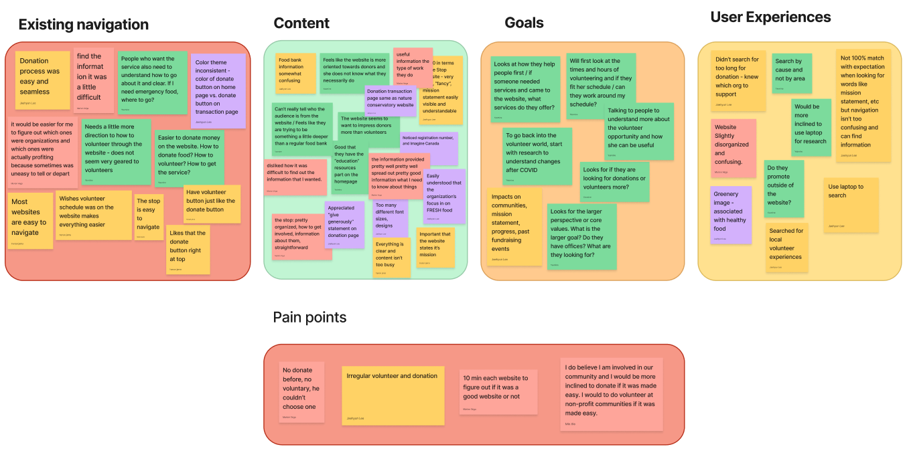
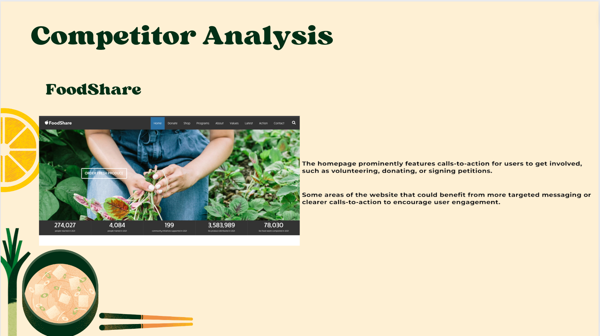
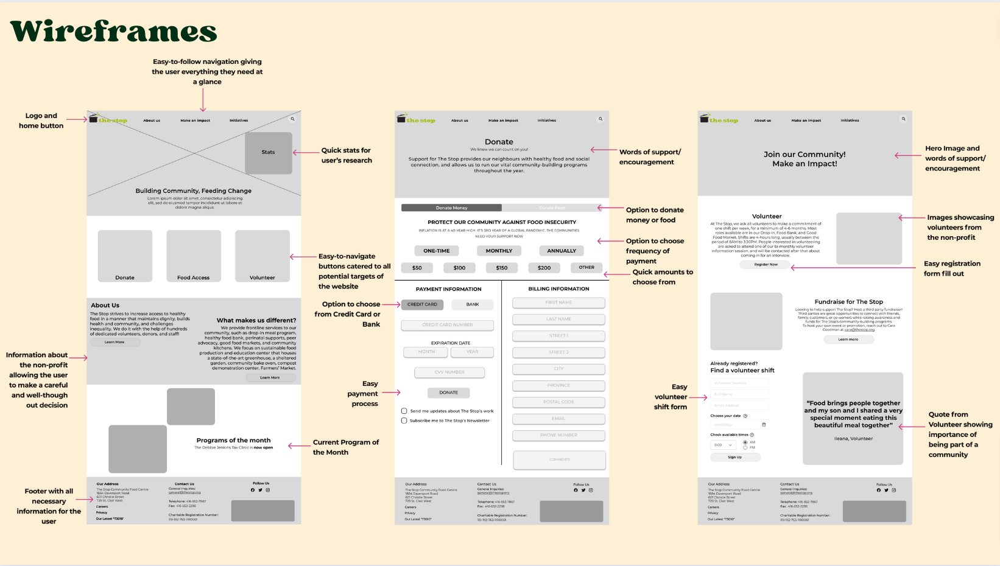
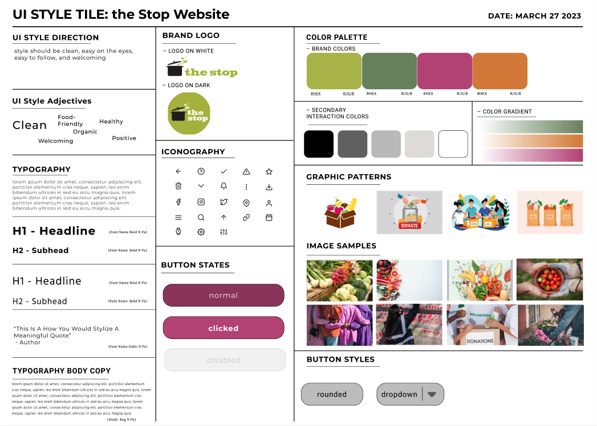
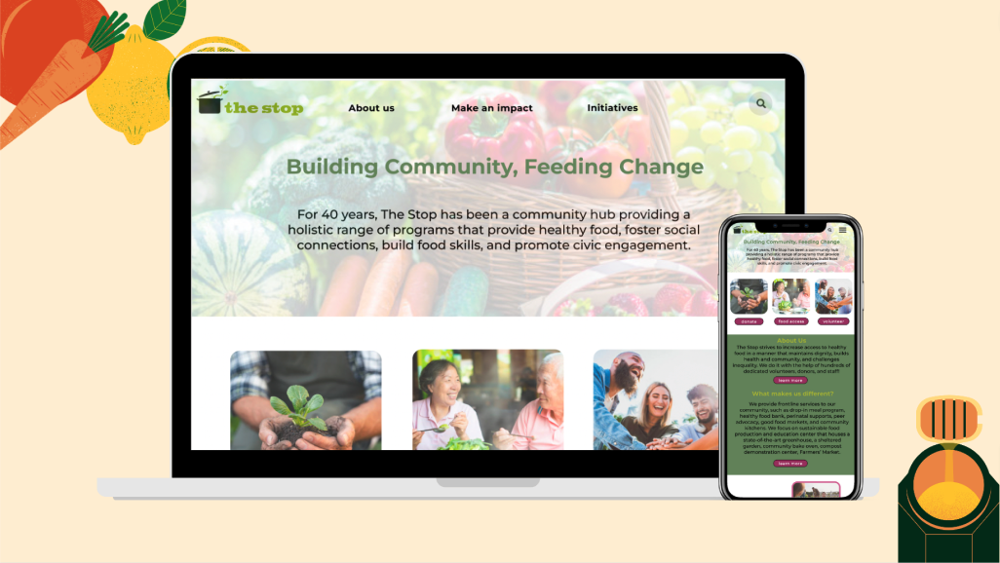

Revamping the website to be friendly for the whole community - donors, prospective volunteers, and those who are looking to utilize the services of the Stop.
I worked as a UX/UI designer on this project, successfully addressing the problem through extensive user research process with centring stakeholders' perspective. We chose to work on the Stop website as we believe in the value the organization is striving to bring back to the community.
After putting together research plan, we conducted series of interviews, including surveys and a stakeholder interview from the Stop.
Interview responses reflected the sentiment of lack of user friendliness when it comes to looking for volunteer opportunities and how to access programs they offer. The “green” theme helped users to understand that the Stop’s priority is on fresh food. Kyla, who is the current marketing manager for the Stop, emphasized that differentiating the Stop from general food banks is important for the organization as they focus on discovering sustainable solution for food inequality for the whole community.
As part of our synthesizing process, we gathered our interview notes into an affinity diagram and created a user persona. Through this exercise, we uncovered our problem statement that we will be addressing through our prototype.
After we have defined our problem statement, we analyzed several non for profit organizations in Toronto to understand the market and to identify potential threats and opportunities. Out of 4 competitors we analyzed, FoodShare came up as the most direct competitor to the Stop as the website reaches to all donors, volunteers, and consumers of their mission.
After we’ve gained consensus from our group, we put together our first wireframe for user testing.
Our mood board focused on maintaining the Stop’s mission on fresh food and community. This was an important differentiator for the Stop as discovered in the stakeholder’s interview. This theme continued on our style guide as well.
After several iterations, our team presented the first version of prototype:
